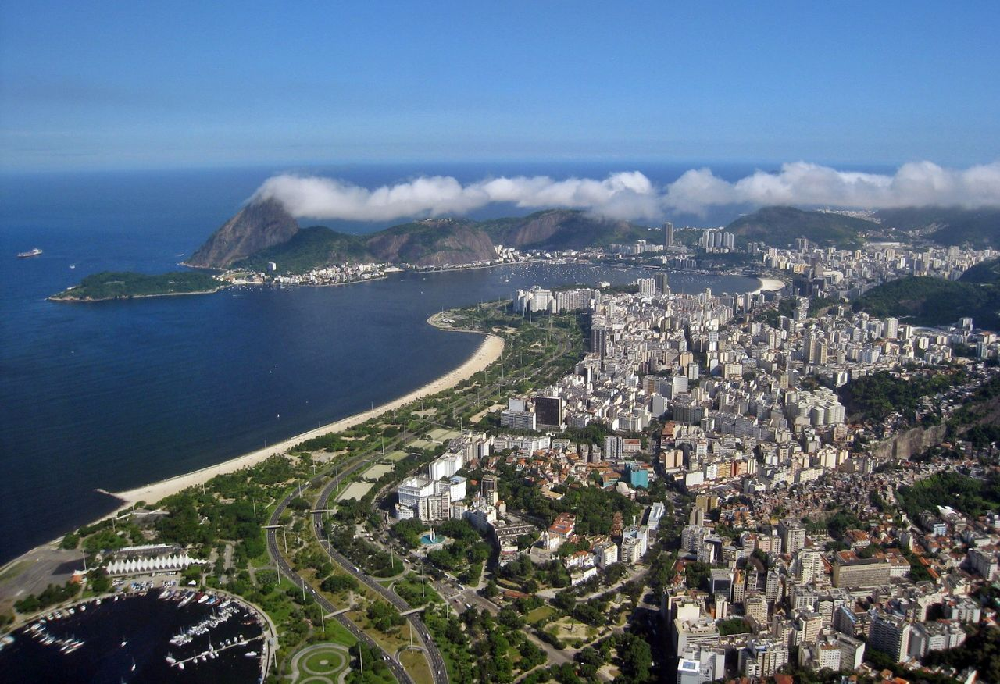
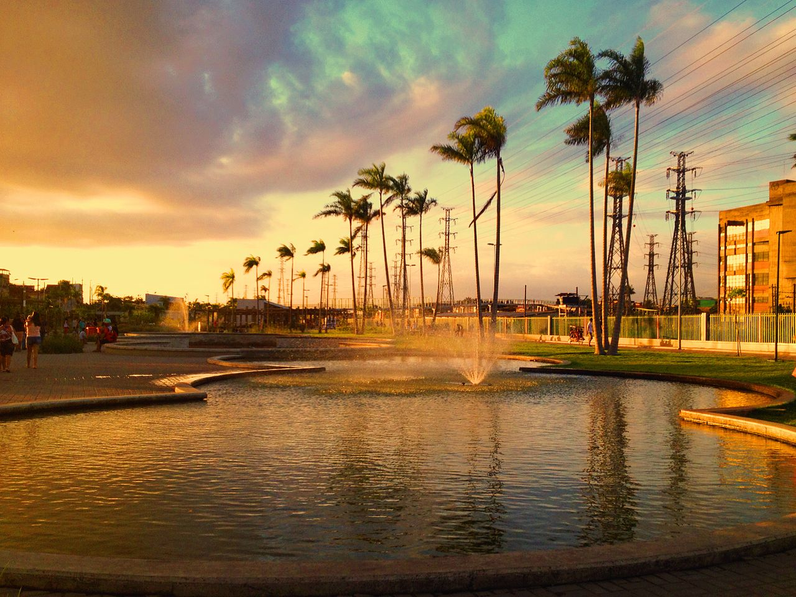
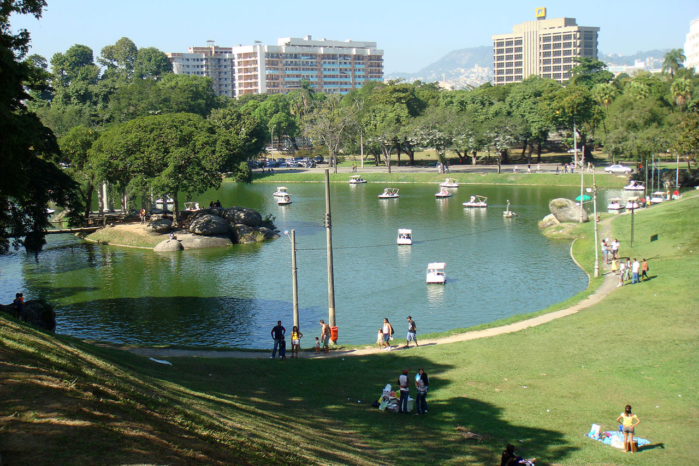

Meus Lugares Favoritos no Rio de Janeiro
Aterro do Flamengo
A característica mais marcante do Parque Eduardo Gomes é a diversidade de sua flora, formada, principalmente, por espécies nativas selecionadas por Burle Marx. A riqueza vegetal atrai muitas aves. Para a travessia dos banhistas em direção à Praia do Flamengo, foram construídas passarelas com curvaturas suaves sobre as pistas expressas e passagens subterrâneas sob as mesmas. As pistas são fechadas ao tráfego nos domingos e feriados das sete às dezoito horas para permitir seu uso pelos frequentadores do parque. Ocasionalmente, as pistas são usadas para competições de atletismo e ciclismo. O local também é usado ocasionalmente para shows de grande público. Diante da oposição dos vizinhos, que temem a incapacidade dos transportes e a depredação do parque, esses eventos têm se tornado menos frequentes.
Parque Madureira

O parque não é superlativo apenas em suas medidas, sendo o terceiro maior da cidade, mas também nos itens e opções de lazer que oferece aos moradores da Zona Norte carioca. Quadras de vôlei, basquete e futebol, além de um campo de grama sintética para partidas de futebol dividem o espaço com fontes, riachos, quiosques, pista de skate, pomar e brinquedos.
Árvores nativas, palmeiras, além de flores e quilômetros de grama, tornando o espaço amplamente arborizado. Práticas sustentáveis, como o controle de resíduos sólidos, uso da água da chuva, captação e uso de energia solar e iluminação de baixo consumo fazem parte do dia a dia do parque. O parque, que acompanha a linha férrea que corta o bairro, conta ainda com dois espaços culturais: a Arena Carioca, que receberá apresentações culturais, e a Praça do Samba, espaço dedicado ao gênero musical tão influente no bairro que conta com suas das mais antigas agremiações cariocas – Portela e Império Serrano.
Quinta da Boa-Vista

Atualmente, a Quinta da Boa Vista funciona como um parque municipal, abrigando o Jardim Zoológico do Rio de Janeiro (com o Museu da Fauna) e, no antigo paço, o Museu Nacional da Quinta da Boa Vista. O prédio do palácio, mantido durante décadas em péssimo estado de conservação pela Universidade Federal do Rio de Janeiro, foi alvo de denúncias na imprensa sobre o risco de perda do patrimônio arquitetônico e de ameaça ao acervo em seu interior. Recentemente, foram realizadas algumas intervenções na fachada monumental e reparos de emergência em partes do telhado. No entanto, um incêndio surgido no terceiro andar o museu, na noite de 2 de setembro de 2018, confirmou as piores expectativas e destruiu quase que a totalidade do palácio, do qual restou apenas a fachada. Do acervo do Museu Nacional, avaliações preliminares realizadas no dia seguinte à tragédia deram conta da perda de mais de 90% do acervo originalmente composto por cerca de 20 milhões de itens, no que foi a maior catástrofe cultural do Brasil.
Nos jardins, o projeto original de Glaziou também vem sendo destruído, com o plantio contínuo de árvores de diversas espécies sobre os gramados da quinta pela prefeitura da cidade do Rio de Janeiro, sem quaisquer estudos históricos ou paisagísticos para sua implantação, descaracterizando o parque. Além de alguns monumentos depredados, como o monumento em homenagem ao centenário natalício de dom Pedro II em frente ao paço, cujas inscrições se encontram muito deterioradas.